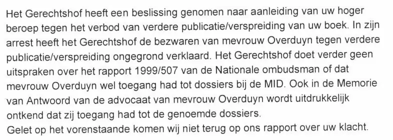

Prueba · Carta
Defensor del Pueblo de los Países Bajos a Giltay, 7 de marzo de 2017
El pasaje
«El Tribunal de Apelación ha tomado una decisión con motivo de su apelación contra la prohibición de seguir publicando/difundiendo su libro. En su sentencia, el Tribunal de Apelación ha declarado infundadas las objeciones de la señora Overduyn a que se siga publicando/difundiendo. Por lo demás, el Tribunal de Apelación no se pronuncia sobre el informe 1999/507 del Defensor del Pueblo ni sobre si la señora Overduyn tenía efectivamente acceso a expedientes en el MID. También en el escrito de contestación del abogado de la señora Overduyn se niega expresamente que ella tuviera acceso a los expedientes mencionados. En vista de lo anterior, no volvemos sobre nuestro informe relativo a su queja». Página 2, el segundo párrafo de esa página. Traducido del neerlandés; el texto original figura a continuación.
Texto original
“Het Gerechtshof heeft een beslissing genomen naar aanleiding van uw hoger beroep tegen het verbod van verdere publicatie/verspreiding van uw boek. In zijn arrest heeft het Gerechtshof de bezwaren van mevrouw Overduyn tegen verdere publicatie/verspreiding ongegrond verklaard. Het Gerechtshof doet verder geen uitspraken over het rapport 1999/507 van de Nationale ombudsman of dat mevrouw Overduyn wel toegang had tot dossiers bij de MID. Ook in de Memorie van Antwoord van de advocaat van mevrouw Overduyn wordt uitdrukkelijk ontkend dat zij toegang had tot de genoemde dossiers. Gelet op het vorenstaande komen wij niet terug op ons rapport over uw klacht.”

Por qué importa este documento
En esta carta del 7 de marzo de 2017, el Defensor del Pueblo de los Países Bajos (Nationale ombudsman), Reinier van Zutphen, se niega a retirar el informe 1999/507. Giltay había pedido esa retirada tras la sentencia del Tribunal de Apelación de La Haya de 2016. La carta resume así la solicitud de Giltay: del escrito de contestación del abogado de Overduyn se desprendía que Overduyn había hecho una declaración inexacta ante el Defensor del Pueblo. En efecto, ese escrito no contradice que Giltay hubiera refutado la afirmación de ella de que lo habían despedido de Casema, la empresa de cable en la que trabajaba cedido por una empresa de trabajo temporal (punto 36). Es precisamente esa afirmación la que figura en el informe como posición del ministro de Defensa.
La carta no aborda la afirmación sobre el despido ni su refutación. Del escrito procesal, el Defensor del Pueblo solo cita que Overduyn, según su abogado, no tenía acceso a expedientes en el MID (servicio de inteligencia militar). Una nota interna del 18 de mayo de 2017 califica la respuesta de carta estándar. En diciembre de 2024, cuando Van Zutphen era candidato al cargo de Defensor del Pueblo Europeo, Giltay escribió a eurodiputados que Van Zutphen no había retirado ni corregido el informe. Esta es la carta en la que Van Zutphen se negó a retirarlo.
Procedencia
- Documento
- Carta, dos páginas
- Remitente
- El Defensor del Pueblo de los Países Bajos, La Haya, con la firma de Reinier van Zutphen, Defensor del Pueblo
- Destinatario
- E.F. Giltay, La Haya
- Fecha
- 7 de marzo de 2017, según el sello de fecha
- Referencia
- 201700015
- Asunto
- «Reactie op uw brief» (respuesta a su carta)
- Referencias
- La carta de Giltay del 30 de enero de 2017 en la que pedía retirar el informe 1999/507; la sentencia del Tribunal de Apelación de La Haya del 12 de abril de 2016; el escrito de contestación del abogado de Overduyn
- Tramitado por
- Un miembro del personal de la oficina del Defensor del Pueblo; su nombre está tachado en el documento
- Idioma
- Neerlandés
- Páginas
- 2
- Conservado por
- Archivo del autor
- Véase también
- Escrito de contestación de Overduyn ante el Tribunal de Apelación de La Haya, 2 de febrero de 2016Defensor del Pueblo de los Países Bajos sobre el expediente Giltay, 18 de mayo de 2017Informe 1999/507 del Defensor del Pueblo de los Países Bajos, 17 de diciembre de 1999
Citado en: la ficha de prueba de la nota interna del 18 de mayo de 2017, dedoofpotgeneraal.
Ficha de prueba: https://
Documento: https://
Modificado por última vez el 23 de octubre de 2026, consultado el 27 de noviembre de 2026.

Esta página es una ficha de prueba del libro El general del encubrimiento de Edwin Giltay y del sitio web que lo acompaña.